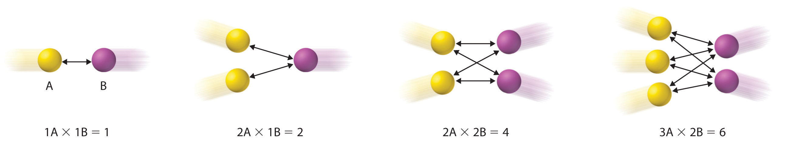

One of the major reasons for studying chemical kinetics is to use measurements of the macroscopic properties of a system, such as the rate of change in the concentration of reactants or products with time, to discover the sequence of events that occur at the molecular level during a reaction. This molecular description is the mechanism of the reaction; it describes how individual atoms, ions, or molecules interact to form particular products. The stepwise changes are collectively called the reaction mechanism.
In an internal combustion engine, for example, isooctane reacts with oxygen to give carbon dioxide and water:
Equation 14.34
2C8H18(l) + 25O2(g) → 16CO2(g) + 18H2O(g)For this reaction to occur in a single step, 25 dioxygen molecules and 2 isooctane molecules would have to collide simultaneously and be converted to 34 molecules of product, which is very unlikely. It is more likely that a complex series of reactions takes place in a stepwise fashion. Each individual reaction, which is called an elementary reactionEach of the complex series of reactions that take place in a stepwise fashion to convert reactants to products., involves one, two, or (rarely) three atoms, molecules, or ions. The overall sequence of elementary reactions is the mechanism of the reaction. The sum of the individual steps, or elementary reactions, in the mechanism must give the balanced chemical equation for the overall reaction.
To demonstrate how the analysis of elementary reactions helps us determine the overall reaction mechanism, we will examine the much simpler reaction of carbon monoxide with nitrogen dioxide.
Equation 14.35
NO2(g) + CO(g) → NO(g) + CO2(g)From the balanced chemical equation, one might expect the reaction to occur via a collision of one molecule of NO2 with a molecule of CO that results in the transfer of an oxygen atom from nitrogen to carbon. The experimentally determined rate law for the reaction, however, is as follows:
Equation 14.36
rate = k[NO2]2The fact that the reaction is second order in [NO2] and independent of [CO] tells us that it does not occur by the simple collision model outlined previously. If it did, its predicted rate law would be rate = k[NO2][CO].
The following two-step mechanism is consistent with the rate law if step 1 is much slower than step 2:
According to this mechanism, the overall reaction occurs in two steps, or elementary reactions. Summing steps 1 and 2 and canceling on both sides of the equation gives the overall balanced chemical equation for the reaction. The NO3 molecule is an intermediateA species in a reaction mechanism that does not appear in the balanced chemical equation for the overall reaction. in the reaction, a species that does not appear in the balanced chemical equation for the overall reaction. It is formed as a product of the first step but is consumed in the second step.
The sum of the elementary reactions in a reaction mechanism must give the overall balanced chemical equation of the reaction.
The molecularityThe number of molecules that collide during any step in a reaction mechanism. of an elementary reaction is the number of molecules that collide during that step in the mechanism. If there is only a single reactant molecule in an elementary reaction, that step is designated as unimolecular; if there are two reactant molecules, it is bimolecular; and if there are three reactant molecules (a relatively rare situation), it is termolecular. Elementary reactions that involve the simultaneous collision of more than three molecules are highly improbable and have never been observed experimentally. (To understand why, try to make three or more marbles or pool balls collide with one another simultaneously!)
Writing the rate law for an elementary reaction is straightforward because we know how many molecules must collide simultaneously for the elementary reaction to occur; hence the order of the elementary reaction is the same as its molecularity (Table 14.7 "Common Types of Elementary Reactions and Their Rate Laws"). In contrast, the rate law for the reaction cannot be determined from the balanced chemical equation for the overall reaction. The general rate law for a unimolecular elementary reaction (A → products) is rate = k[A]. For bimolecular reactions, the reaction rate depends on the number of collisions per unit time, which is proportional to the product of the concentrations of the reactants, as shown in Figure 14.19 "The Basis for Writing Rate Laws of Elementary Reactions". For a bimolecular elementary reaction of the form A + B → products, the general rate law is rate = k[A][B].
Table 14.7 Common Types of Elementary Reactions and Their Rate Laws
| Elementary Reaction | Molecularity | Rate Law | Reaction Order |
|---|---|---|---|
| A → products | unimolecular | rate = k[A] | first |
| 2A → products | bimolecular | rate = k[A]2 | second |
| A + B → products | bimolecular | rate = k[A][B] | second |
| 2A + B → products | termolecular | rate = k[A]2[B] | third |
| A + B + C → products | termolecular | rate = k[A][B][C] | third |
Figure 14.19 The Basis for Writing Rate Laws of Elementary Reactions
This diagram illustrates how the number of possible collisions per unit time between two reactant species, A and B, depends on the number of A and B particles present. The number of collisions between A and B particles increases as the product of the number of particles, not as the sum. This is why the rate law for an elementary reaction depends on the product of the concentrations of the species that collide in that step.
Note the important difference between writing rate laws for elementary reactions and the balanced chemical equation of the overall reaction. Because the balanced chemical equation does not necessarily reveal the individual elementary reactions by which the reaction occurs, we cannot obtain the rate law for a reaction from the overall balanced chemical equation alone. In fact, it is the rate law for the slowest overall reaction, which is the same as the rate law for the slowest step in the reaction mechanism, the rate-determining stepThe slowest step in a reaction mechanism., that must give the experimentally determined rate law for the overall reaction.This statement is true if one step is substantially slower than all the others, typically by a factor of 10 or more. If two or more slow steps have comparable rates, the experimentally determined rate laws can become complex. Our discussion is limited to reactions in which one step can be identified as being substantially slower than any other. The reason for this is that any process that occurs through a sequence of steps can take place no faster than the slowest step in the sequence. In an automotive assembly line, for example, a component cannot be used faster than it is produced. Similarly, blood pressure is regulated by the flow of blood through the smallest passages, the capillaries. Because movement through capillaries constitutes the rate-determining step in blood flow, blood pressure can be regulated by medications that cause the capillaries to contract or dilate. A chemical reaction that occurs via a series of elementary reactions can take place no faster than the slowest step in the series of reactions.
Rate-determining step. The phenomenon of a rate-determining step can be compared to a succession of funnels. The smallest-diameter funnel controls the rate at which the bottle is filled, whether it is the first or the last in the series. Pouring liquid into the first funnel faster than it can drain through the smallest results in an overflow.
Look at the rate laws for each elementary reaction in our example as well as for the overall reaction.
The experimentally determined rate law for the reaction of NO2 with CO is the same as the predicted rate law for step 1. This tells us that the first elementary reaction is the rate-determining step, so k for the overall reaction must equal k1. That is, NO3 is formed slowly in step 1, but once it is formed, it reacts very rapidly with CO in step 2.
Sometimes chemists are able to propose two or more mechanisms that are consistent with the available data. If a proposed mechanism predicts the wrong experimental rate law, however, the mechanism must be incorrect.
In an alternative mechanism for the reaction of NO2 with CO, N2O4 appears as an intermediate.
Write the rate law for each elementary reaction. Is this mechanism consistent with the experimentally determined rate law (rate = k[NO2]2)?
Given: elementary reactions
Asked for: rate law for each elementary reaction and overall rate law
Strategy:
A Determine the rate law for each elementary reaction in the reaction.
B Determine which rate law corresponds to the experimentally determined rate law for the reaction. This rate law is the one for the rate-determining step.
Solution:
A The rate law for step 1 is rate = k1[NO2]2; for step 2, it is rate = k2[N2O4][CO].
B If step 1 is slow (and therefore the rate-determining step), then the overall rate law for the reaction will be the same: rate = k1[NO2]2. This is the same as the experimentally determined rate law. Hence this mechanism, with N2O4 as an intermediate, and the one described previously, with NO3 as an intermediate, are kinetically indistinguishable. In this case, further experiments are needed to distinguish between them. For example, the researcher could try to detect the proposed intermediates, NO3 and N2O4, directly.
Exercise A
Iodine monochloride (ICl) reacts with H2 as follows:
2ICl(l) + H2(g) → 2HCl(g) + I2(s)The experimentally determined rate law is rate = k[ICl][H2]. Write a two-step mechanism for this reaction using only bimolecular elementary reactions and show that it is consistent with the experimental rate law. (Hint: HI is an intermediate.)
Answer:
This mechanism is consistent with the experimental rate law if the first step is the rate-determining step.
Exercise B
The reaction between NO and H2 occurs via a three-step process:
Write the rate law for each elementary reaction, write the balanced chemical equation for the overall reaction, and identify the rate-determining step. Is the rate law for the rate-determining step consistent with the experimentally derived rate law for the overall reaction: rate = k[NO]2[H2]2?
Answer:
Many reaction mechanisms, like those discussed so far, consist of only two or three elementary reactions. Many others consist of long series of elementary reactions. The most common mechanisms are chain reactionsA reaction mechanism in which one or more elementary reactions that contain a highly reactive species repeat again and again during the reaction process., in which one or more elementary reactions that contain a highly reactive species repeat again and again during the reaction process. Chain reactions occur in fuel combustion, explosions, the formation of many polymers, and the tissue changes associated with aging. They are also important in the chemistry of the atmosphere.
Chain reactions are described as having three stages. The first is initiation, a step that produces one or more reactive intermediates. Often these intermediates are radicalsSpecies that have one or more unpaired valence electrons., species that have an unpaired valence electron. In the second stage, propagation, reactive intermediates are continuously consumed and regenerated while products are formed. Intermediates are also consumed but not regenerated in the final stage of a chain reaction, termination, usually by forming stable products.
Let us look at the reaction of methane with chlorine at elevated temperatures (400°C–450°C), a chain reaction used in industry to manufacture methyl chloride (CH3Cl), dichloromethane (CH2Cl2), chloroform (CHCl3), and carbon tetrachloride (CCl4):
CH4 + Cl2 → CH3Cl + HCl CH3Cl + Cl2 → CH2Cl2 + HCl CH2Cl2 + Cl2 → CHCl3 + HCl CHCl3 + Cl2 → CCl4 + HClDirect chlorination generally produces a mixture of all four carbon-containing products, which must then be separated by distillation. In our discussion, we will examine only the chain reactions that lead to the preparation of CH3Cl.
In the initiation stage of this reaction, the relatively weak Cl–Cl bond cleaves at temperatures of about 400°C to produce chlorine atoms (Cl·):
Cl2 → 2Cl·During propagation, a chlorine atom removes a hydrogen atom from a methane molecule to give HCl and CH3·, the methyl radical:
Cl· + CH4 → CH3· + HClThe methyl radical then reacts with a chlorine molecule to form methyl chloride and another chlorine atom, Cl·:
CH3· + Cl2 → CH3Cl + Cl·The sum of the propagation reactions is the same as the overall balanced chemical equation for the reaction:
Without a chain-terminating reaction, propagation reactions would continue until either the methane or the chlorine was consumed. Because radical species react rapidly with almost anything, however, including each other, they eventually form neutral compounds, thus terminating the chain reaction in any of three ways:
CH3· + Cl· → CH3Cl CH3· + CH3· → H3CCH3 Cl· + Cl· → Cl2Here is the overall chain reaction, with the desired product (CH3Cl) in bold:
| Initiation: | Cl2 → 2Cl· |
| Propagation: | Cl· + CH4 → CH3· + HCl |
| CH3· + Cl2 → CH3Cl + Cl· | |
| Termination: | CH3· + Cl· → CH3Cl |
| CH3· + CH3· → H3CCH3 | |
| Cl· + Cl· → Cl2 |
The chain reactions responsible for explosions generally have an additional feature: the existence of one or more chain branching steps, in which one radical reacts to produce two or more radicals, each of which can then go on to start a new chain reaction. Repetition of the branching step has a cascade effect such that a single initiation step generates large numbers of chain reactions. The result is a very rapid reaction or an explosion.
The reaction of H2 and O2, used to propel rockets, is an example of a chain branching reaction:
| Initiation: | H2 + O2 → HO2· + H· |
| Propagation: | HO2· + H2 → H2O + OH· |
| OH· + H2 → H2O + H· | |
| Termination: | H· + O2 → OH· + ·O· |
| ·O· + H2 → OH· + H· |
Termination reactions occur when the extraordinarily reactive H· or OH· radicals react with a third species. The complexity of a chain reaction makes it unfeasible to write a rate law for the overall reaction.
A reaction mechanism is the microscopic path by which reactants are transformed into products. Each step is an elementary reaction. Species that are formed in one step and consumed in another are intermediates. Each elementary reaction can be described in terms of its molecularity, the number of molecules that collide in that step. The slowest step in a reaction mechanism is the rate-determining step. Chain reactions consist of three kinds of reactions: initiation, propagation, and termination. Intermediates in chain reactions are often radicals, species that have an unpaired valence electron.
How does the term molecularity relate to elementary reactions? How does it relate to the overall balanced chemical equation?
What is the relationship between the reaction order and the molecularity of a reaction? What is the relationship between the reaction order and the balanced chemical equation?
When you determine the rate law for a given reaction, why is it valid to assume that the concentration of an intermediate does not change with time during the course of the reaction?
If you know the rate law for an overall reaction, how would you determine which elementary reaction is rate determining? If an intermediate is contained in the rate-determining step, how can the experimentally determined rate law for the reaction be derived from this step?
Give the rate-determining step for each case.
Before being sent on an assignment, an aging James Bond was sent off to a health farm where part of the program’s focus was to purge his body of radicals. Why was this goal considered important to his health?
Cyclopropane, a mild anesthetic, rearranges to propylene via a collision that produces and destroys an energized species. The important steps in this rearrangement are as follows:
where M is any molecule, including cyclopropane. Only those cyclopropane molecules with sufficient energy (denoted with an asterisk) can rearrange to propylene. Which step determines the rate constant of the overall reaction?
Above approximately 500 K, the reaction between NO2 and CO to produce CO2 and NO follows the second-order rate law Δ[CO2]/Δt = k[NO2][CO]. At lower temperatures, however, the rate law is Δ[CO2]/Δt = k′[NO2]2, for which it is known that NO3 is an intermediate in the mechanism. Propose a complete low-temperature mechanism for the reaction based on this rate law. Which step is the slowest?
Nitramide (O2NNH2) decomposes in aqueous solution to N2O and H2O. What is the experimental rate law (Δ[N2O]/Δt) for the decomposition of nitramide if the mechanism for the decomposition is as follows?
Assume that the rates of the forward and reverse reactions in the first equation are equal.
The following reactions are given:
What is the relationship between the relative magnitudes of k−1 and k2 if these reactions have the rate law Δ[F]/Δt = k[A][B][E]/[C]? How does the magnitude of k1 compare to that of k2? Under what conditions would you expect the rate law to be Δ[F]/Δt = k′[A][B]? Assume that the rates of the forward and reverse reactions in the first equation are equal.
The k2 step is likely to be rate limiting; the rate cannot proceed any faster than the second step.